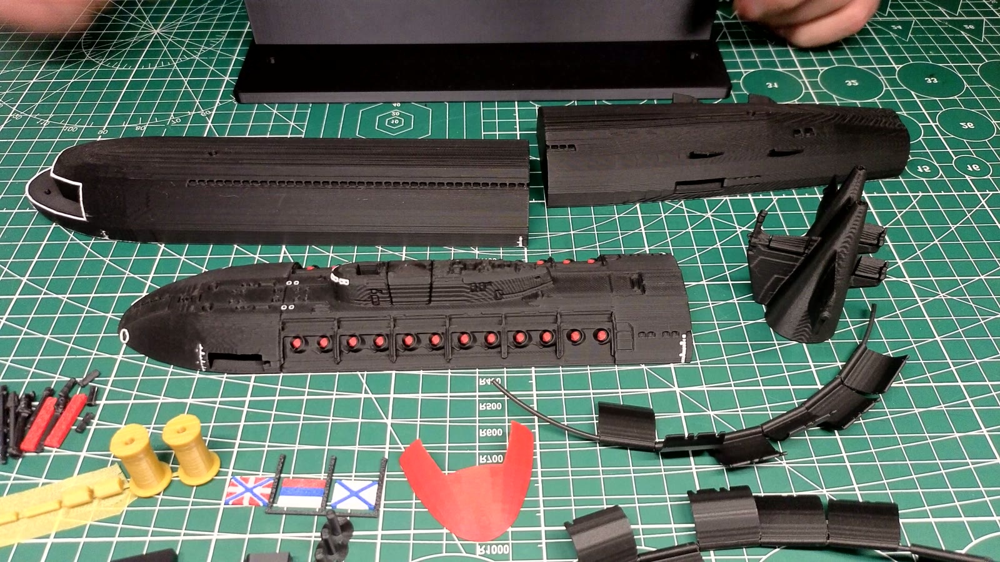

Модель атомного подводного крейсера проекта 949А, спроектированная и собранная вручную офицером-подводником.
Видео: открытые источники.
Эта страница ничего о вас не собирает: без регистрации, без cookies и рекламы. Считается только общее число посещений — анонимно.
Актуальную цену, наличие и предзаказ уточняйте у мастера.
Именная табличка — по согласованию.
Чтобы заказать, напишите мастеру лично. Контакты для связи скоро появятся на этой странице.
Модель с именной табличкой дарят к флотским праздникам. Ближайший отмечен.

Каждую лодку я печатаю и собираю сам: зачистка, подгонка, сборка и проверка каждого узла. В ролике — только сборка, ускоренно.
Подводные крейсера третьего поколения создавались против крупных корабельных групп, прежде всего авианосных. Главное оружие — дальние противокорабельные ракеты комплекса «Гранит».
Проект разработало ЦКБ-18, сегодня ЦКБ МТ «Рубин». Работы возглавлял главный конструктор Павел Пустынцев, с 1977 года — генеральный конструктор Игорь Баранов. Строили лодки в Северодвинске, на «Севмаше».
Начиная с третьего корпуса серии лодки строили по улучшенному проекту 949А. Он примерно на 10 метров длиннее 949-го (около 154 м), с увеличенным ограждением рубки и семилопастными винтами. На борту для экипажа были спортзал, сауна и даже небольшой бассейн.
Год вступления в строй и флот. Латунной чертой отмечены лодки Тихоокеанского флота.
| Корабль | Флот | В строю |
|---|---|---|
| К-148 «Краснодар» | Северный | 1986 |
| К-173 «Красноярск» | Тихоокеанский | 1986 |
| К-132 «Иркутск» | Тихоокеанский | 1988 |
| К-119 «Воронеж» | Северный | 1989 |
| К-410 «Смоленск» | Северный | 1990 |
| К-442 «Челябинск» | Тихоокеанский | 1990 |
| К-456 «Тверь» | Тихоокеанский | 1992 |
| К-266 «Орёл» | Северный | 1992 |
| К-186 «Омск» | Тихоокеанский | 1993 |
| К-141 «Курск» | Северный | 1994 |
| К-150 «Томск» | Тихоокеанский | 1996 |
К-141 «Курск» погиб 12 августа 2000 года вместе со всем экипажем. Вечная память.
Подставка и таблички — чёрные матовые, буквы и QR-код выпуклые, золотом. QR-код ведёт на эту страницу — историю проекта.
К подставке можно заказать именную табличку: корабль, звание, фамилия, имя и отчество, годы службы. Буквы печатаются золотом, текст выравнивается по центру.
Пример: «АПКРРК К-132 «ИРКУТСК» · капитан-лейтенанту … · за службу в … годах».
Модель спроектирована и напечатана с нуля подводником, который прослужил на этих кораблях больше пятнадцати лет. Сотни часов работы и десятки пробных печатей ушли на то, чтобы каждая деталь встала на своё место.
Рули двигаются, флаги вставляются в гнёзда на рубке и в носу, винты вращаются. Подставку можно дополнить именной табличкой.